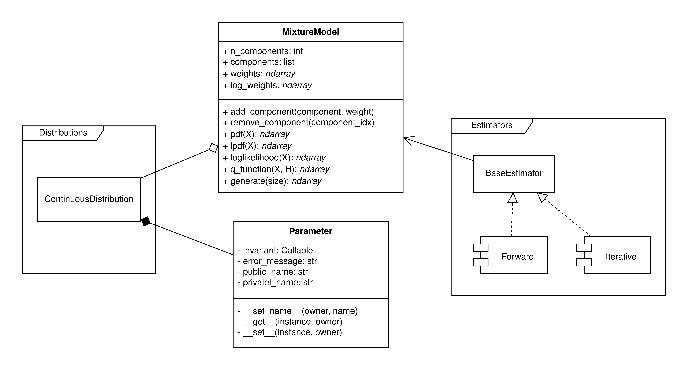

Core#
Предоставляет класс смеси распределений, а так же дескриптор, позволяющий реализовывать свои распределения. (Решил его вынести сюда а не в Distributions)
{kind=link}

Классы#
Parameter#
Класс, реализующий протокол дескриптора Python для управления атрибутами-параметрами в классах распределений.
Этот класс решает две ключевые задачи:
Валидация: Гарантирует, что параметр всегда имеет корректное значение (например,
scaleдля нормального распределения должен быть больше нуля).Фиксация: Позволяет “замораживать” параметры, чтобы они не менялись в процессе оптимизации.
Атрибуты
- invariant: Callable[[float], bool]
Функция-предикат, которая проверяет корректность присваиваемого значения. Должна возвращать
True, если значение допустимо, иFalseв противном случае. По умолчанию принимает любое значение (lambda x: True).- error_message: str
Текст ошибки, которая будет вызвана, если значение не прошло проверку инварианта.
- public_name: str
Публичное имя атрибута, как оно задано в классе-владельце (например,
locилиscale). Это имя устанавливается автоматически при создании класса через метод__set_name__.- private_name: str
Приватное имя, используемое для хранения значения внутри экземпляра класса-владельца (например, _loc или _scale). Использование отдельного приватного имени необходимо, чтобы избежать бесконечной рекурсии при вызове getattr и setattr внутри дескриптора.
Методы
- __set_name__(self, owner, name)
Магический метод, который автоматически вызывается интерпретатором Python при создании класса-владельца. Он “сообщает” дескриптору имя, под которым он был присвоен атрибуту класса (например,
nameбудет равно"scale").- __get__(self, instance, owner) -> float
Метод для получения значения атрибута. Когда мы обращаемся к
distribution.scale, вызывается этот метод, который возвращает значение изdistribution._scale.- __set__self, instance, value)
Метод для установки нового значения. Это ключевой метод, где происходит вся логика:
Проверяет, не является ли этот параметр “зафиксированным” (не входит ли его
public_nameв множествоinstance._fixed_params).Если не зафиксирован, проверяет новое
valueс помощью функцииself.invariant.Если обе проверки пройдены, сохраняет
valueвinstanceпод приватным именем (self.private_name).
Альтернативы
В прошлой версии архитектуры параметры хранились в объекте распределения в виде списка и без имён. Такой подход приводил ко многим проблемам:
Внешний пользователь работал с параметрами как со списком, поэтому не мог знать о том, какой параметр закодирован в массиве под индексом 0 или под индексом 1, об этом знал только разработчик.
Логика преобразования параметров к внутреннему и внешнему виду лежала в самом объекте распределения, и проводилась с помощью специальных методов. Дескриптор решает эту проблему, инкапсулируя эту логику внутри себя.
Если хранить параметры в таком виде, то неудобно поддерживать заморозку и разморозку параметров, т.к. это происходит по индексам, а не по именам, и для конечного пользователя все так же является непонятным.
MixtureModel#
Класс смеси распределений.
Атрибуты
+ n_components: int
Количество компонент в смеси.
+ components: list[Distribution]
Компоненты смеси.
+ weights: ndarray
Веса компонент.
- logits: ndarray
Логиты. Необходимы для численной стабильности и соблюдения инварианта для весов. Можно оптимизировать их напрямую.
Методы
+ add_component(component: int, weight: float)
Добавляет новую компоненту и назначает ей выбранный вес. Остальные веса пересчитываются согласно их пропорциям.
+ remove_component(component_idx: int)
Удаляет компоненту из смеси по ее индексу. Остальные веса пересчитываются согласно их пропорциям так, чтобы соблюдался инвариант.
+ pdf(X: ArrayLike): ndarray
Функция плотности.
+ lpdf(X: ArrayLike): ndarray
Логарифм функции плотности.
+ loglikelihood(X: ArrayLike): ndarray
Логарифм правдоподобия.
+ q_function(X: ArrayLike, H: ArrayLike): ndarray
Q-функция.
+ generate(size: int): ndarray
Сэмплирование выборки размера
size.
Различные диаграммы#
Пример взаимодействия ContinuousDistribution и дескриптора Parameter#
sequenceDiagram
participant User
participant Distribution as "экземпляр<br>Exponential"
participant Parameter as "дескриптор<br>Parameter ('rate')"
participant Invariant as "lambda s: s > 0"
User->>Distribution: dist.rate = 2.0
activate Distribution
Distribution->>Parameter: __set__(dist, 2.0)
activate Parameter
Parameter-->>Distribution: является ли 'rate' в dist._fixed_params?
Distribution-->>Parameter: Нет
Parameter->>Invariant: invariant(2.0)
activate Invariant
Invariant-->>Parameter: True
deactivate Invariant
Parameter->>Distribution: setattr(dist, "_rate", 2.0)
note right of Parameter: Значение корректно и<br>параметр не зафиксирован.<br>Обновляем приватное поле.
deactivate Parameter
deactivate Distribution
User->>Distribution: dist.rate = -1.0
activate Distribution
Distribution->>Parameter: __set__(dist, -1.0)
activate Parameter
Parameter-->>Distribution: является ли 'rate' в dist._fixed_params?
Distribution-->>Parameter: Нет
Parameter->>Invariant: invariant(-1.0)
activate Invariant
Invariant-->>Parameter: False
deactivate Invariant
Parameter-->>User: raise ValueError
deactivate Parameter
deactivate Distribution